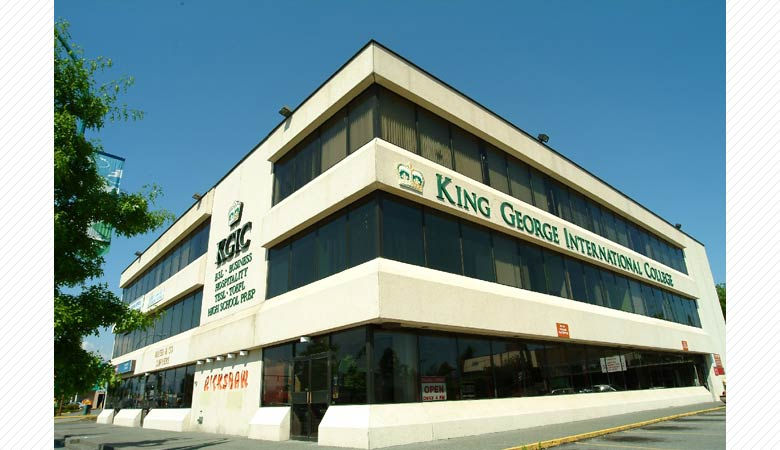
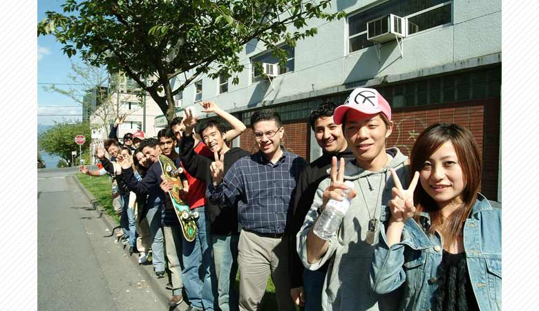
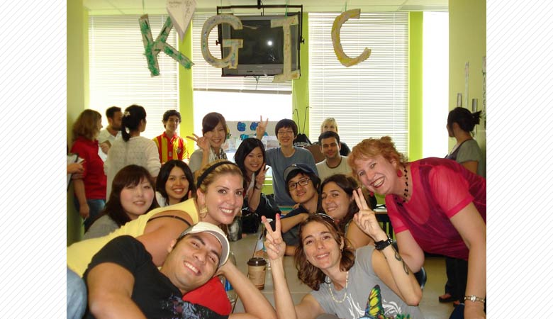
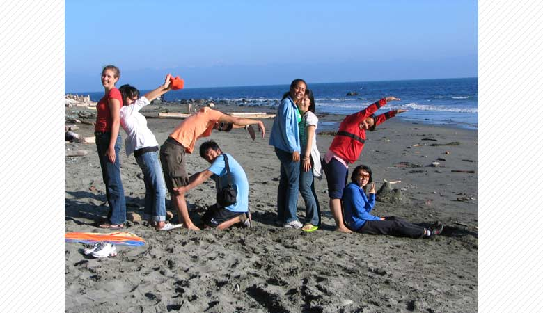

KGIC/KGIBC-CTCは1996年にBC州サレーにて創立され、
現在はバンクーバーに、サレー、トロント、ビクトリア、ハリファックスキャンパスを持つ語学・専門学校です。
KGICはキャリアアップを行いたい方、留学にて就職を有利にしたい方、英語環境にて仕事をしたい方に最適な学校です。
ESLプログラムは英語の基本である「読む、書く、聞く、話す」を基礎からしっかりと学習します。
そのことにより、カジュアルな場面から、仕事や面接などあらゆる場面にてしっかりと対応ができる英語力を養うことができます。

さらに、レベル分けもユニークな科目ごとにレベル分け制度、「文法、リーディング＆ライティング、リスニング、コミュニケーション＆発音」の
４つのクラスを、それぞれでレベル評価するために、弱点の強化がしっかりとでき、しっかりとした基礎を築くことができます。
併設のKGIBC-CTCでは数多くの専門プログラムを開講し、将来のキャリアアップ、就職に役立つスキル、英語環境での仕事など、
留学の効果をそのまま仕事やキャリアなどにつなげることができる知識やスキルを習得することができます。
最近、最も人気が高いプログラムにABMがあります。
このプログラムは英語でのビジネススキルを学習したのちに長期（有給OK）インターンシップを行い実務スキル、
英語での仕事、外国人との仕事に順応するスキルを身に着けることができます。
英語を使い専門的な知識を身につけることにより、自信をつけることができ、更なる英語力の向上を図り、
そして帰国後の飛躍に大きく役に立てることができます。

≪英語面接の達人になる≫
KGICで行っているPMM（スピーキング強化プログラム）では、徹底的に英語でのプレゼンテーション力の向上を行います。
英語で仕事面接では、英語で自分をプレゼンしなければなりません。PMMで抜群のプレゼン力を身に着け、英語での仕事をＧＥＴしよう！

≪インターンシップをする≫
KGICでは短期間でも取得できるインターンシッププログラムを開講しています。ビジネス英語プログラムでは、
8週間のビジネス英語学習の後に、4週間のインターンシップを行うことができます。
≪ワーホリ必見！無料ワークショップ≫
KGICでは定期的に「WORK SHOP」を開催しています。WORK SHOPではカナダの仕事事情や面接対策、履歴書対策を行っています。
ワーホリ学生、インターンシップ希望学生、帰国後外資系に就職希望の方へ最適のセミナーです。